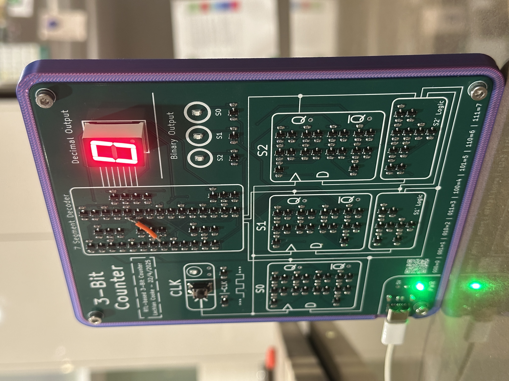

3-Bit Discrete RTL Counter
Creating a 3-bit counter with RTL-logic, using raw NPN transistors and resistors.
Introduction
In this project, we explore computing in its purest form. By foregoing the abstractions offered by microchips, integrated circuits and even logic gates, we develop and intuition and appreciation for the simplest building block underpinning modern computing - the transitor. Given that modern computers offer millions, sometimes billions of transistors inside a single chip, we will focus our efforts here on a simpler logic device with a much lower transistor count. The 3-bit counter is the perfect candidate. It has, as we will see, a relatively low transistor count, yet still posesses basic logical structures present in the most modern of computers. In this project, we will start with an overview and block diagram of a 3-bit counter, explore the bipolar junction transistor (BJT), build and simiulate a digital circuit, and finally design, assemble and test the circuit on a printed circuit board (PCB).
The 3-bit Counter
A 3-bit counter is a simple digital circuit made up of three flip-flop circuits (one per bit) that steps through every binary value from 000 up to 111 (0–7 in decimal) and then wraps back around to 000. Each clock pulse advances the count by one, with the least significant bit toggling every pulse and higher bits toggling only when the bit below rolls over. This gives a neat, orderly binary sequence, which we will visualise via three LEDs for the binary output, and a seven-segment display for decimal output.

The functional block diagram in Figure 2.1 illustrates the flow of data between high-level logic blocks in the circuit. Most notable are the D flip-flops (three - one each for \(S_{0}\), \(S_{1}\) and \(S_{2}\)), next-state combinational logic blocks and the binary and decimal outputs. Note that to drive the decimal output via the 7-segment display, we need a '7-segment decoder' logic block to drive the necessary segments for each input number. Lastly, a clock pulse is provided to the three flip-flops to synchronise the system. We will explore how each of these blocks work in the following section.
Designing Digital Building Blocks
Designed in KiCAD with a compact form factor. I paid extra attention to:
- Tracing each NAND gate without crossover.
- Clear silkscreen labels for every transistor and resistor.
- Rounded trace corners and generous via clearances.


Simulation
- Hand-soldered all SMD resistors & capacitors.
- Placed BJTs and LEDs, checked orientation.
- Debugged early fan-out issues by increasing pull-ups.
- Cleaned with IPA and fitted into 3D-printed enclosure.
Resistor Transistor Logic - Crossing from Digital to Analog
Building logic from scratch taught me:
- The real impact of fan-out limits on voltage levels.
- How timing skews arise in ripple counters.
- Why integrated logic is so pervasive—so many transistors cram into each IC!
PCB Design with KiCAD 8
- Logic Style: RTL NAND gates built from NPN transistors + pull-up resistors.
- Flip-Flops: D-type, edge-triggered on the falling edge of the clock.
- Counter: Three FFs in series → ripple counter.
- Clock: Manual push-button, hardware-debounced.
Finished Design
Building logic from scratch taught me:
- The real impact of fan-out limits on voltage levels.
- How timing skews arise in ripple counters.
- Why integrated logic is so pervasive—so many transistors cram into each IC!
Conclusion
Building logic from scratch taught me:
- The real impact of fan-out limits on voltage levels.
- How timing skews arise in ripple counters.
- Why integrated logic is so pervasive—so many transistors cram into each IC!